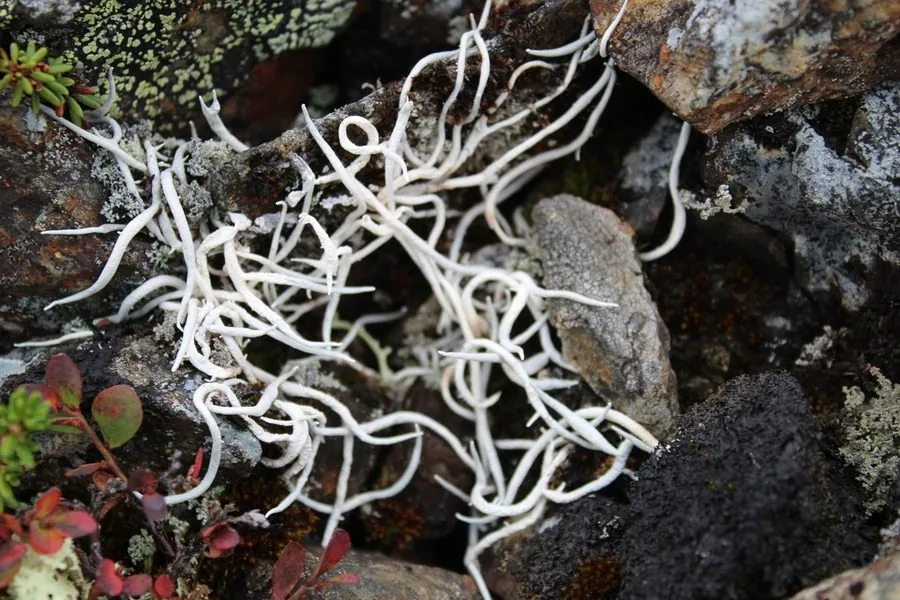

真菌 · 真菌界
地茶 Thamnolia vermicularis

霜降衣科枝状地衣，地衣体白色、中空如小管，生于高海拔草甸与流石滩，可泡茶入药，味苦而性凉。
- 分类
- 门子囊菌门纲茶渍纲目茶渍目科霜降衣科属地茶属
- 栖息环境
- 高海拔草甸、流石滩与高山苔原，耐寒耐强紫外线
- 地理分布
- 青藏高原、横断山区及亚洲高海拔地区，中国西南高山常见
- 保护级别
- 暂无评估；生长缓慢，高海拔采集需控制
物种志
地茶的地衣体呈细长圆柱形或蠕虫状，长 2–8 厘米，粗 1–2 毫米，白色至灰白色，中空，表面平滑或有细纵纹，不分枝或稀疏分枝，常成片散生于地面。子囊盘罕见，地衣体由真菌与藻类共生构成。
地茶生于高海拔草甸、流石滩与高山苔原，是青藏高原、横断山区常见的地衣，海拔可达 5000 米。它含地茶酸等成分，味苦、性凉，藏族与纳西族民间将其晒干泡茶，用于清热降火、生津止渴，故称“雪茶”。现代研究提示其成分具有抗炎、抗氧化活性，但不宜过量或长期替代药物。它生长极慢，高海拔采集后恢复困难，应控制采集量。它常与苔藓、其他地衣混生，形成高山地表的地衣结皮。
形态与习性
- 地衣体细长圆柱形，长 2–8 厘米，白色中空
- 表面平滑或有细纵纹，不分枝或稀疏分枝
- 生境高海拔草甸与流石滩，可达 5000 米
- 食用性晒干泡茶，味苦性凉，民间称雪茶
- 药用清热降火、生津止渴，不宜过量
- 保护生长极慢，采集后恢复困难
趣味知识
- 地茶看起来像一根根白色小虫或细管，中空是它的典型特征。
- 藏族与纳西族把它晒干当茶喝，味苦回甘，称为“雪茶”或“地茶”。
- 它生长在海拔四五千米的流石滩上，每年只长几毫米。
- 现代研究显示它含抗炎、抗氧化成分，但不能代替药物治疗。